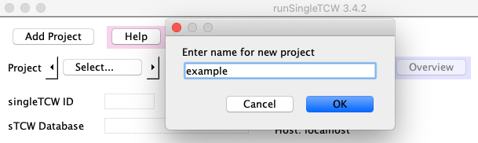
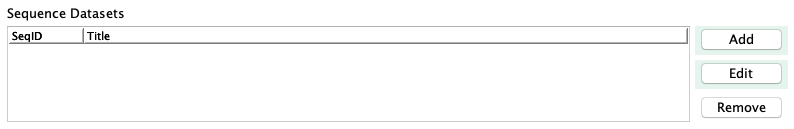
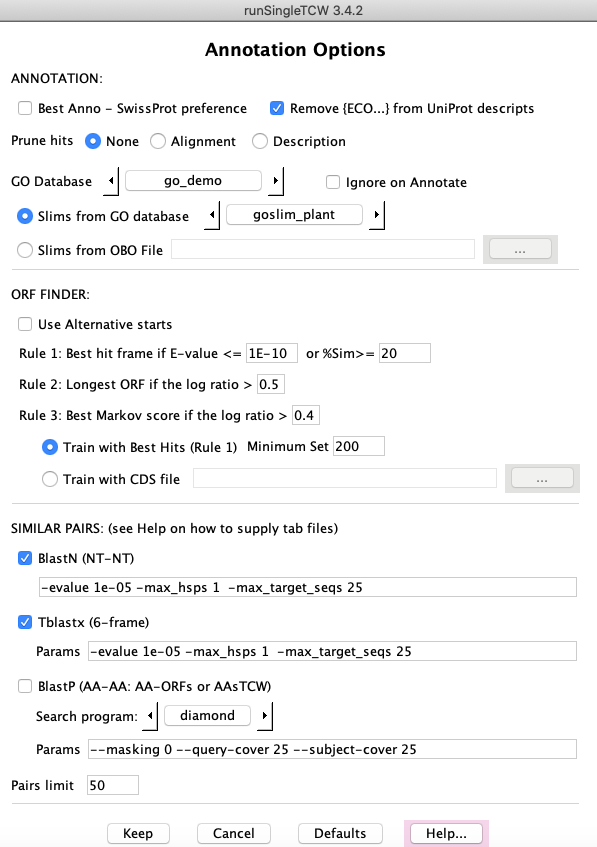

This document covers building a TCW database for a single species. Terminology:
- Dataset is one of the following:
(1) A file of sequences with optional count data from conditions, where the sequences can be nucleotide or amino acid.
(2) A set of sequences to assemble, with optional quality data.
- Conditions may be tissues, treatments, etc that are to be compared, with optional replicates.
- AnnoDBs are fasta files of sequences (nucleotide or amino acid) to compare the dataset sequences
against for annotation. TCW provides special support for UniProt, but can use any file of sequences (e.g. Genbank nr),
see runAS for obtaining and formatting the files.
Note: there is still some old terminology floating around, such as the term "library" use to be used for both "dataset" and "condition",
and the acronym PAVE is still found in some places as it was the original name for TCW.
Contents
| Demo | Description | Documentation
|
|---|
| demoTra | Transcripts with counts, locations, remarks | Here - this section
|
| demoAsm | Assemble transcripts and ESTs | Assembly Guide
|
| demoPro | Protein sequences with counts | Same steps as for demoTra
|
Follow steps of Installation. Make sure your HOSTS.cfg is correct.
|
At the command line, type
./runSingleTCW
The window shown on the right will be launched.
Select demoTra from the Project drop-down list.
Note that you can set the number of CPUs to use, although the
demo does not need more than one.
1. Click the Build Database command
This loads the datasets in this section; there is one
dataset of transcripts ("Ginger") with count data for three
conditions ("Root","Tip","Zone"), where the first condition has five replicates
and the second two conditions have one replicate.
Note: A command button will turn gray while it is
executing, and there will be output to the terminal with any errors, warning and the state of execution.
Note: A command button will not be active when it is not valid to run, e.g.
the Instantiate command is grayed out since the datasets have not been loaded.
2. Click the Instantiate command.
- The Skip Assembly was checked so the transcripts will simply be loaded, without
assembly.
- The Use Sequence Names From File is not checked, meaning that the TCW will assign new,
sequentially-numbered names prefixed by the singleTCW ID.
From this point on, you may run
./viewSingleTCW tra or select the Overview button
after any step to view the results that have been entered.
3. Click Annotate
This searches against several UniProt partial databases which have been provided as part
of the package.
|
(Click to see larger image)

|
There may be one or more yes/no prompts for you to answer at the
terminal; keep an eye on the terminal until it says "Start annotating sequences",
at which point, it will run without any further prompts. For example,
if the GO database has not been built yet (see Step 5), the following will be written to the terminal:
+++Warning: GO_tree go_demo is missing; ignoring GO step
--Please confirm above parameters. Continue with annotation? (y/n)?
Answer 'y' to continue.
The output to the terminal and to the file projects/demoTra/logs/anno.log will look something like
this log (this includes the GO annotation).
4. Click the Add Remarks or Location button (bottom of window), a window will popup (not shown).
- Select the "..." on the same line as the label Location file:, select the file "traLocations.txt",
then select the button Add on the same line.
- Select the "..." on the same line as the label Remark file:, select the file "traRemarks.txt",
then select the button Add on the same line.
5. To build the GO database, see
Demo annotation setup. Then execute GO Only.
Time for adding the GOs: This take longer than the other TCW steps, where it can takes around 2 to 5 minutes for this demo.
If it takes a lot longer than 4 minutes for this step,
check your max_allows_packet (see Trouble shooting).
6. To compute differential expression (DE), install R and the respective packages. From the command line, execute
./runDE tra
The DE Guide describes how to install the necessary
packages, and how to add DE p-values to the TCW database. If Step 5 has been run, then you can also add
the p-values for the GO.
See overview for the final demoTra overview..
Follow steps of Installation. Make sure your HOSTS.cfg is correct.
To create a new project, press the Add Project button at the top of the runSingleTCW interface.
You will be prompted for a project name; enter a name using letters, numbers, or underscores (no spaces).
Do not include "sTCW", that will be added. When you select "OK",
- The name will be entered for singleTCW ID, and for Database with the prefix "sTCW" .
- The project/<name> directory will be created with files LIB.cfg and sTCW.cfg. These maintain all information you enter.
For example, if you enter the name "example", the ID will be "example" and the database will be "sTCW_example".
You cannot change the Database name, but you can shorten the singleTCW ID, as discussed in the next paragraph.
|


|
singleTCW ID: This should be a short descriptive name (2-5 characters, e.g. "ex"). It is used for the
following:
- This can be used as a command line parameter to
runDE and viewSingleTCW, e.g. "viewSingleTCW ex".
- If TCW generates the sequence names (if Use Sequence Names from File is not checked),
the singleTCW ID followed by sequential
numbers will be used, e.g. ex_00001, ex_00002, etc.
Instead of using the Add Projects, you may create a directory under /projects and put your sequence files along
with any other optional files (i.e. quality and count); when you select the project pulldown, you
will see your project (the project pulldown lists all directories under /projects).
Define all datasets, then select Build Database to load the data into the database.
Datasets cannot be added to an existing database.
Defining a sequence dataset
|
A TCW project must have at least one sequence dataset, which is a FASTA file of sequences.
Select Add beside the Sequence Datasets and the panel will be replaced with the one
shown on the lower right.
SeqID: Enter the dataset name (a brief identifier) in the first box; it should be a short (3-5 characters) name.
Sequence File: Click the browse button labeled "..." to select the
fasta file of sequences.
The ">" lines in the fasta file are the sequence names,
where characters other than letters, numbers, and underscores will be
changed to underscores.
Additional information:
- Count File: For already assembled transcripts (e.g. Illumina) or protein sequences, there maybe associated count files.
Adding them is covered below in Defining count data.
- Quality File: For Sanger ESTs or 454 data, there may be a quality file (standard Phred quality scores in fasta format).
- Sanger ESTs: TCW assumes the 5' ESTs have the ".f" suffix and the 3' ESTs have the ".r" suffix. If there
are different from this, enter the correct ones.
- ATTRIBUTES: Enter any additional information
as desired in this section. This information is very important as it provides a description of the data
that is stored in the database and shown on the Overview panel of
viewSingleTCW.
After entering the files and attributes, select Keep.
The main panel will reappear with the SeqID and Title added to
the Sequence Datasets table. Additionally, the information will be written in
projects/<name>/LIB.cfg.
|


|
Updating attributes
The attribute information can be added or changed after the database is created by
using the Edit button on the main panel;
note, the projects/<name>/LIB.cfg file has to be accessible to change attributes.
|
This section discusses inputing the tabular file of replicate counts per sequence; the
exact format of this file and building it is covered in the section Build combined count file below.
Count File: Click the browse button labeled "..." to select the file containing the table of counts
for the sequences.
Keep: The dataset panel disappears and the main panel returns. The
sequence dataset will be shown in the first table, while the conditions (column headings from the count file)
will be listed in the second table.
Use Define Replicates to group replicates, as discussed in the next section.
After defining the replicates, use Edit Attributes to add information for the
conditions, which will be shown on the viewSingleTCW overview.
|
|


|
|
On Keep, the Associated Counts table on the main panel will be updated, showing
the correct condition list and number of replicates for each (as shown on the right).
In order to add metadata (e.g. title), select a row followed by Edit.
Naming rules:
- There must not be any duplicate names between the SeqID column of the first table and the Condition of
the second table, e.g. there may not be a SeqID of "Root" in this example.
- There can be NO duplicate replicate or condition names between Sequence Datasets.
|

|
The Count File is a
tab or space delimited file where the first line contains
the word "SeqID" (or any label) followed by the condition column headings. If your
file is comma-delimited, they can be replaced with sed -i"" 's/,/" "/g' filename
Example Count File: The following is the demoTra count file, showing the first 4 transcripts and
counts for three conditions, where the first condition (Root) has five replicates.
TCW determines the condition names and replicate numbers are from the column headers.
The sequence names must correspond to those in the sequence file.
SeqID Root1 Root2 Root3 Root4 Root5 Tip1 Zone1
tZoR_000023 378 1002 1649 826 1195 726 151
tZoR_000117 101 206 151 109 185 129 58
tZoR_000246 1859 2506 1334 1541 2307 3012 976
tZoR_000335 529 919 1103 810 1427 2338 1438
Build combined count file
It is common to have separate count files for each sample, in which case,
you can use the Build combined count file to generate the combined
count file. This explanation will continue using the "demoTra" example.
The easiest way to handle many sample files is to put them in one directory. Name each
file with the "condition name + replicate number"; TCW parses up to the first "." to determine the condition
and replicate number (the suffix can be whatever you want).
For example, in the directory projects/demoTra/counts are the files:
Root1.cnt Root2.cnt Root3.cnt Root4.cnt
Root5.cnt Tip1.cnt Zone1.cnt
|
As shown in this example, the file prefix (e.g. Root1) is shown in the "Rep name" column in the table on the right,
and is used as the column heading in the combined file. Furthermore, the
replicates for a condition will be grouped together by the text up to the number
(as shown previously in Define biological replicates).
To build the file:
- Select Build combined count file from the Add and edit a Sequence Dataset panel.
- Select Add Directory of Files, which brings up a file chooser window; select the directory containing
the files (e.g. "count") and it loads all files from the selected directory, as shown on the right.
- Select Generate File to build the file called "Combined_read_counts.csv". Control will return to
the Sequence Dataset panel, and this filename will be automatically entered into the "Count File:" entry box.
|

|
If your files are not in one directory, or not named correctly, you will need to add them individually
using the Add Rep File. You probably will need to edit the "Rep name" column; to edit the name,
highlight the row then click the mouse at the right edge of the entry box (if that doesn't work, trying clicking
at the beginning).
As already described, the replicates are grouped by clicking the Define Replicates button on
the main window.
Instantiation (with optional assembly)
| Go to top |
Skip Assembly:
If the input is already assembled transcript sequences, or protein sequences, or gene sequences,
check this option.
If the datasets are ESTs, or multiple transcript datasets that you want to assemble together,
do not select this option and see Assembly Guide.
Press Instantiate to either assemble or finalize the sequences in the database.
Use Sequence Names from File: If the sequences are NOT going to be assembled, then this checkbox is relevant, as follows:
If you want TCW to name the sequences, do not check this option;
TCW will rename the sequences using the SingleTCW ID followed by sequential numbers.
If you want to use the original names from file, check this option; note the following restrictions:
- Characters other than letters, numbers, or underscores
will be replaced by underscores.
- The names must be under 25 characters. Note that the names supplied by
sequencers are often longer than allowed, which will make this fail.
Three types of computation are performed:
- Basic annotation: GC content and ORFs
- Functional annotation: Compares one or more protein and/or nucleotide databases ("annoDBs") to each sequence in the database. If the annoDBs are
from UniProt, add the associated GO annotations.
- Similar sequences: Compute similar sequences, which is particularly useful for analyzing the results of
assembled transcripts.
ORF finder options
GC content and ORF finding is always performed when Annotate is performed.
The ORF finder uses the annoDB hits to aid in determining the best open reading frame.
See the ORF document on the ORF finding options and
details on how it works. If after annotation is complete, you just want to run the ORF finder, use
the ORF only option.
AnnoDBs and UniProt
The term "AnnoDB" refers to a fasta file of nucleotide or protein sequences,
where the TCW sequences (transcript or protein) will be searched against the annoDBs for functional annotation.
Read Annotation Setup for obtaining UniProt and other annotation databases.
|
Import AnnoDBs provides a way to enter all UniProt databases at once.
If you have used runAS
for the annotation setup,
make sure the last step was TCW.anno, which creates a file of UniProt databases.
Select Import AnnoDBs, which pops up a
file chooser, then select the projects/TCW.anno.<date>; all your UniProts will be added at once
with appropriate taxonomy values (the AnnoDB table on the right was populated this way).
|

|
|
Any additional databases (e.g. Genbank nr) need to
be added one by one. To add an annotation database,
press the Add button next to the AnnoDB table. This brings
up the panel shown on the right.
Taxonomy: this does not need to be unique, but the DB type must be, which is created as follows:
- Type: defined in the ">" of the annoDB fasta file of sequences, e.g. "sp" for SwissProt.
- Taxonomy: first 3 letters of the taxonomy, e.g. "pla" for plants.
- DB type: the type+taxonomy, e.g. if the type is "sp" and the taxonomy is "plant",
the TCW "DB type" will be "SPpla".
DB type is
shown in various tables of viewSingleTCW to indicate the origin of the hit.
| 
|
Generate Hit Tabular File:
Search Program: select DIAMOND or BLAST.
Parameters: defaults will be provided based on the search program used; select a search program to see its default parameters. To change the default parameters, you must select a specific search program.
Unannotated only: if you select this, it will only search against any unannotated
sequences. The annoDBs are searched in the order they are listed in the AnnoDB table, so selecting this
option does not make sense for the first annoDB. This option is somewhat obsolete now that there are
super-fast search programs.
Use Existing Hit Tabular File:
You can supply your own hit results file (must be in tabular format).
You must still provide the name of the annoDB fasta file as
it extracts the description and species from it.
The Options button below the AnnoDBs table provides additional options for:
- ANNOTATION (described below).
- ORF FINDER (described in ORF).
- SIMILAR SEQUENCES (described below).
The second two options are not available for TCW database created from protein sequences.
GO Database (GO, KEGG, EC, InterPro, Pfam annotations)
See Annotation Setup for creating the GO database.
Once the GO database is created, it can be selected, as shown on the right. Once selected, it will display
the available GO Slim categories in the drop-down below it; alternatively, a OBO formated file may be entered.
Similar Sequences
The annotator can compare all sequences and determine the top N pairs,
where their alignments can be viewed in viewSingleTCW.
This can be helpful for assessing the stringency of an assembly by
viewing how similar sequences are.
Adding to annotation
Additional annotation can be added at a later time; see Update and Redo annotation
in the Annotation Guide.
| 
|
Select the Add Remarks or Locations button at the
bottom of the runSingleTCW panel; the panel on the right will replace the main panel.
Details of each function is provided below.
Both the locations and remarks can be search and viewed in viewSingleTCW. Remarks
are a very good way to add additional information to the sequences.
|

|
Add Location File
Select the "..." on the Location File row, select a location file, and press Add on the same row.
The file is a set of rows where the first word of each row is the sequence ID and the rest of the row is the format:
group:start-end(strand), e.g. SC_1:392-496(-)
- The group would be the supercontig, scaffold, chromosome, linkage, etc.
If TCW can extract numbers/X/Y from the end of the group (e.g. chr1, chrX),
it adds a column containing just the "Group" number that can be sorted numerically in
viewSingleTCW.
- The sequence ID must match a sequence ID in the database,
so you probably will want to "Instantiate" the sequences using "Use Sequence Names from File".
A script is available, scripts/extractCodingLoc.pl, to generate the transcript sequence file from a
genome sequence and GFF3 file. It also generates the location file in the format needed by TCW. It only works with
a subset of the GFF3 files, so probably needs to be modified
for your GFF3 or GTF file. It uses BioPerl.
The group name, start, end and strand are columns in the TCW database that can be viewed in viewSingleTCW
by selecting the "Columns" tab on the left, then checking the columns under "General".
Remark File
Select the "..." on the Remark File row, select the file of remarks, and press Add on the same row.
The file is a set of rows where the first word of each row is the sequence ID and the rest of the row is the Remark.
- Single and double quotes will be changed to spaces.
- Semi-colon will be changed to a colon.
- Do not use the following remarks, as they are added during annotation:
Multi-frame; ORF contains Hit; Hit contains ORF; ORF overlaps Hit; !LG
In viewSingleTCW, the 'User Remark' can be viewed by selecting the "Columns" tab on the left, then checking the "Remark"
column under "General". The remark can also be search on in the "Basic Queries Sequence"; this is a great way to add
additional information about your sequences.
If you make the remarks "keyword=value", you can then search on the keyword
to get a specific group of sequences.
Remove Remarks
Selecting this button will remove all user remarks. Note, TCW adds remarks in the 'TCW Remark' column; these
are not removed.
Trouble shooting
If errors occur, a message is written to the terminal
and the Java stack-trace is written to the file sTCW.error.log. This can
be sent to us so we can help you trouble shoot the problem, that is, if the
message to the terminal is not sufficient to indicate how to fix the problem. NOTE:
errors are appended to this file, so if an error keeps re-occurring without getting
fixed, the file can get quite large.
If the information on the runSingleTCW panel does not look right, remove
/projects/<project>/LIB.cfg to start over. You can try fixing the problem
by editing this file, but its necessary to format it correctly.
If that does not work, email tcw@agcol.arizona.edu and we will guide you on how to enter the information.
If you have many sequences (e.g. transcripts) in the database and/or many annoDBs,
this can take a lot of memory. Running Annotate sets the memory to 4096, which may not be
enough; in this case, once runSingleTCW is ready to annotate your database, exit and run from the command line:
./execAnno <project>
You can increase the memory size in the execAnno script.
Also see Trouble shooting.
TCW integrates several different R packages for computing differential expression of transcripts, including
EdgeR and DESeq2; an R script containing the R commands to compute DE can also be supplied. GOseq is supported for
computing DE enrichment of GO categories. The DE computations are pairwise, i.e. conditions are compared two
at a time. Each comparison results in a
column added to the database, which may be viewed and queried. The DE modules are accessed either
through ./runDE on the command line, or the 'Launch DE' button at the bottom of the
Manager interface (Fig. 1).
For full details on the DE modules, see the Differential Expression Guide.
IMPORTANT DETAILS
Directory structure and configuration files
| Go to top |
Users do not ordinarily need to look at the underlying directories and files used by TCW, however they are described
here since it may be helpful at times.
When a project is added with Add Project, runSingleTCW
creates a directory under /projects with the user supplied name
(referred to here as <project>).
The projects/<project> directory has a
LIB.cfg file where runSingleTCW saves all the library information and
a sTCW.cfg file where runSingleTCW saves all the assembly and annotation information.
Though you can put your data files anywhere that runSingleTCW can access,
you may want to put your data
files in the projects/<project> directory in order to keep everything in one place.
Also, the /DBfasta directory contains a subset of the UniProt files for the demo; this is
a good location to put all annoDB files.
Both execAssm and execAnno write to the projects/<project> directory, where
execAssm writes mainly log files, while execAnno puts all
hit results in hitResults subdirectory. Hit files are NOT removed as they may be reused.
Both programs write log files to a log subdirectory.
As mentioned above, runSingleTCW creates LIB.cfg and sTCW.cfg files under
the /projects/<project> directory. Once created, you can run the three steps from the
command line instead of through the interface.
| Action | Executable | Configuration
| Build Database | execLoadLib | LIB.cfg
| | Instantiate | execAssm | sTCW.cfg
| | Annotate | execAnno | sTCW.cfg
| |
The LIB.cfg and sTCW.cfg files can be edited with a text editor, but be careful as
runSingleTCW and the executables expects the syntax to be exactly as it writes the file.
Once a project is created, it is viewed and queried using viewSingleTCW.
This program is launched either:
- From the command line (./viewSingleTCW), which
brings up a panel of mySQL databases with the sTCW_ prefix, where databases can be selected to view.
- From the command line using the singleTCW ID or database name as a parameter (e.g. viewSingleTCW tra).
- Through the button at the bottom of the Manager interface (Fig. 1).
The TCW Tour shows the various displays.

{kind=link}
{kind=link}
{kind=link}